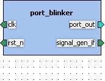

Table of contents
1. Component TUT - ip.hwp.accelerator - port_blinker - 1.0
1.1. Model parameters
1.2. Kactus2 attributes
1.3. Ports
1.4. Bus interfaces
1.5. File sets
1.6. Views

Description: Counts up and inverts output when reaching the limit value. Then start over again.
IP-Xact file: port_blinker.1.0.xml
| Name | Data type | Default value | Description |
|---|---|---|---|
| SIGNAL_WIDTH | integer | 32 | In bits |
Product hierarchy: IP
Component implementation: HW
Component firmness: Mutable
| Name | Direction | Width | Left bound | Right bound | Port type | Type definition | Default value | Description |
|---|---|---|---|---|---|---|---|---|
| clk | in | 1 | 0 | 0 | std_logic | IEEE.std_logic_1164.all | ||
| ena_in | in | 1 | 0 | 0 | std_logic | IEEE.std_logic_1164.all | ||
| port_out | out | 1 | 0 | 0 | std_logic | IEEE.std_logic_1164.all | ||
| rst_n | in | 1 | 0 | 0 | std_logic | IEEE.std_logic_1164.all | ||
| val_in | in | 32 | 31 | 0 | std_logic_vector | IEEE.std_logic_1164.all |
Interface mode: slave
Ports used in this interface:
| Name | Direction | Width | Left bound | Right bound | Port type | Type definition | Default value | Description |
|---|---|---|---|---|---|---|---|---|
| clk | in | 1 | 0 | 0 | std_logic | IEEE.std_logic_1164.all |
Interface mode: master
Ports used in this interface:
| Name | Direction | Width | Left bound | Right bound | Port type | Type definition | Default value | Description |
|---|---|---|---|---|---|---|---|---|
| port_out | out | 1 | 0 | 0 | std_logic | IEEE.std_logic_1164.all |
Interface mode: slave
Ports used in this interface:
| Name | Direction | Width | Left bound | Right bound | Port type | Type definition | Default value | Description |
|---|---|---|---|---|---|---|---|---|
| rst_n | in | 1 | 0 | 0 | std_logic | IEEE.std_logic_1164.all |
Interface mode: slave
Ports used in this interface:
| Name | Direction | Width | Left bound | Right bound | Port type | Type definition | Default value | Description |
|---|---|---|---|---|---|---|---|---|
| ena_in | in | 1 | 0 | 0 | std_logic | IEEE.std_logic_1164.all | ||
| val_in | in | 32 | 31 | 0 | std_logic_vector | IEEE.std_logic_1164.all |
Identifiers:
Default file builders:
| File type | Command | Flags | Replace default flags |
|---|---|---|---|
| vhdlSource | vcom | -quiet -check_synthesis | false |
| File name | Logical name | Build command | Build flags | Specified file types | Description |
|---|---|---|---|---|---|
| port_blinker.vhd | work | vhdlSource |
Description: Auto-generated HTML documentation of the component
Identifiers: documentation
| File name | Logical name | Build command | Build flags | Specified file types | Description |
|---|---|---|---|---|---|
| port_blinker.html | documentation |
Type: non-hierarchical
File sets contained in this view: